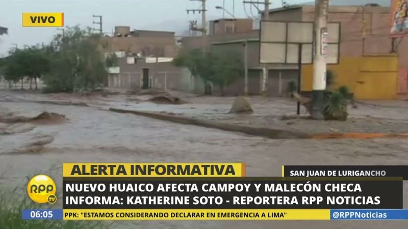

San Juan de Lurigancho es uno del distrito más poblado de la cuidad con 1 millón de habitantes aproximadamente, su volumen poblacional es cercano o mayor a departamentos como Amazonas, Ayacucho o Moquegua. El distrito posee los siguientes problemas: falta de conexión con otros distritos, déficit en equipamiento y servicios, carencia de espacios públicos de calidad y áreas verdes, en las laderas los problemas de agudizan, se observa vivienda precaria, inadecuadas vías de acceso, ocupación informal y tugurización.
Toda esta información es general y son los principales problemas que afectan al distrito, algunas zonas el degrada miento de entorno urbano es mayor, como el caso de la Avenida Malecón Checa, en la cual se procederá hacer un análisis más específico de los problemas que posee y sus causantes. El tramo inicia en los puentes Chinchaysuyo y Pirámide del sol, pasando por dos puentes atirantados hasta llegar a la entrada de Campoy.
Comenzando con los puentes vehiculares, estos son angostos, el flujo de autos es enorme, y funcionan como un embudo dificultando las entradas y salidas de los autos al distrito, las calles de los puentes son angostas, en horas punta la vereda colapsa de gente y en algunos puntos las calles son tomadas por los comerciantes ambulantes. Con respecto al tema de equipamiento deportivo son solo cuatro canchas de futbol y nada más, y en todo el borde existe un muro alto de concreto que divide extensa vereda con el rio, además los personas que hacen ejercicio que son pocas no tienen vista hacia el rio. El primer tramo hay una mezcla de tiendas, bares, centro deportivo, condominios y escuelas, ninguno posee algún beneficio del rio como elemento de espacio de recreación o parque. Al llegar al cruce con la avenida chimú encuentras grifo y cercano se emplazan viviendas al borde del rio con peligro de colapso. El siguiente tramo inicia en el grifo y finaliza en la entrada de Campoy, en este el uso de suelo es de vivienda taller, comercio e industria, encuentras grifos, talleres, restaurantes, colegios, mercados y plantas industriales, en este caso se evidencia una mezcla de usos que no funciona, si bien es cierto que el comercio dinamiza algunos sectores, no compatibiliza con la industria pesada, por lo general las industrias se agrupan, tienen sus propias vías y se alejan de las viviendas. A lo largo de la avenida existen plantas textiles, cementeras, plantas de sanitarios y en su interior salen y entran camiones de carga, en algunos casos los insumo o materia prima los descargan en la vía pública generando desorden y a la vez agregar el congestionamiento de vía que desembocan a un conjunto de problemas como la contaminación del ruido, ambiental y desgaste de las vías. El manejo vial es inadecuado, los camiones de carga pesada provenientes de las plantas industriales de Huachipa se desvían por avenida Malecón Checa para no paga peaje en la Ramiro Priale y salir directo a la panamericana. En el año 2017 en verano el rio se desborda e inunda esta avenida afectando las casas e industrias, , el paso del huaico dejo las pistas en mal estado y una capa de polvo asentada que hasta ahora sigue, los camiones de carga pesada levantan el polvo y dificultan la respiración de las personas, los más afectados son los escolares y adultos mayores.
Finalmente, la incompatibilidad de usos de suelos, el alto tránsito de camiones de cargar, la informalidad, el rio contaminando sin ningún tratamiento ecológico es la realidad contexto urbano, y producto de esto es el degrada miento del ambiente urbano en esta avenida que hace que las persona tengan una baja calidad de vida urbana. La municipalidad tarda con el mantenimiento de la vías, solo han arreglado el pavimento de un corto tramo, lo cual es insuficiente, las soluciones son estrategias urbanas y de ordenamiento, los primeros actos que se deberían hace son fiscalizar las industrias informales, cambios de usos, aprovechar la potencialidad del rio como espacio de recreación y delimitador de espacios que mejoren el entorno urbano.
